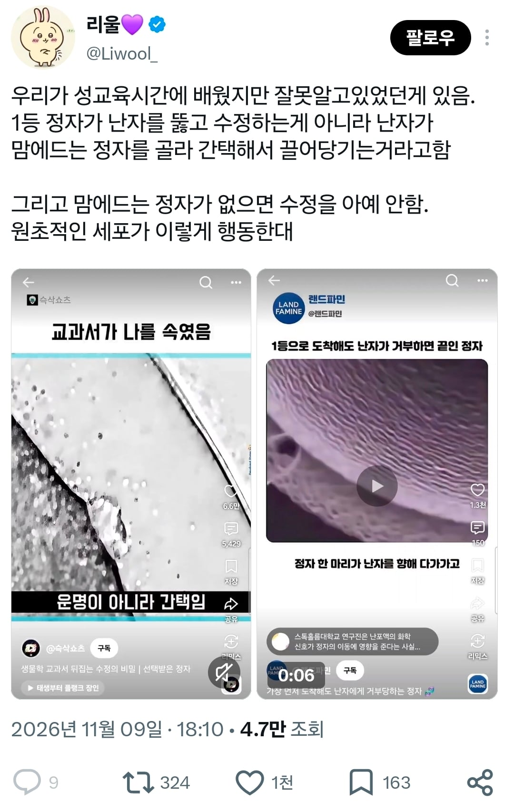
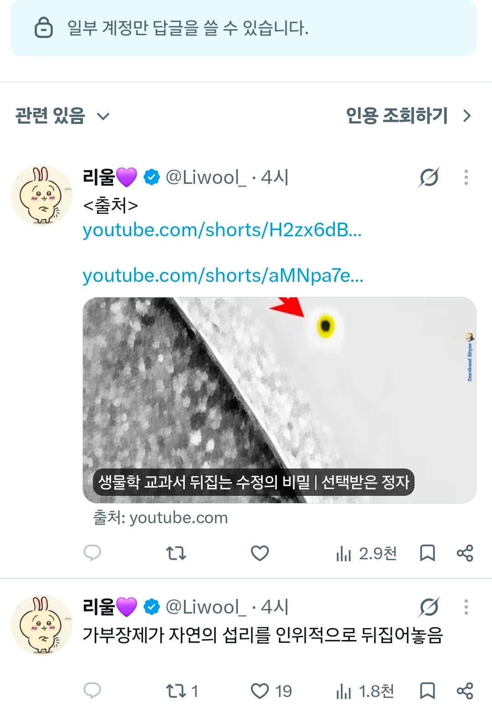
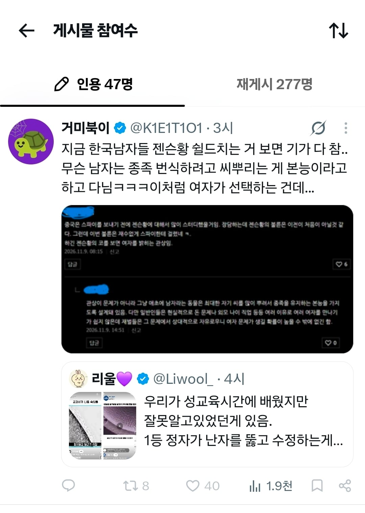
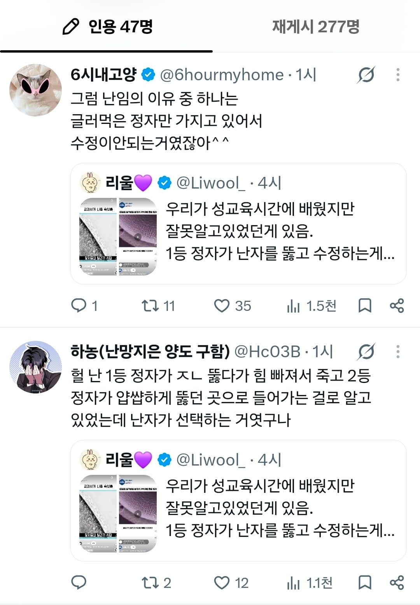

원글 올린 계정의 프로필 들어가보니 여성의당, 6B3T, 페미니즘
그만 알아보자




원글 올린 계정의 프로필 들어가보니 여성의당, 6B3T, 페미니즘
그만 알아보자
그렇게 해서 태어난 게 너라구요?
성별이란게 없는 반수체 세포덩어리에 자아의탁하는 병신들이 많네
그럼 강간당하면 임신 안하겠다 선택 안할테니
트짹아 그렇게 믿고싶겠지만 아니란다 ㅋㅋ
대가리 텅 빈 년들 또 지들끼리 물빨하네
고르고 고른게 저거면 씨가...
자꾸 자기가 태어난걸 건드리니 멍청하다고 할수밖에 셀프패드립이야
헉 정자마다 특징이 있구나! 난자는 잘생긴 정자 고르는건가! ?